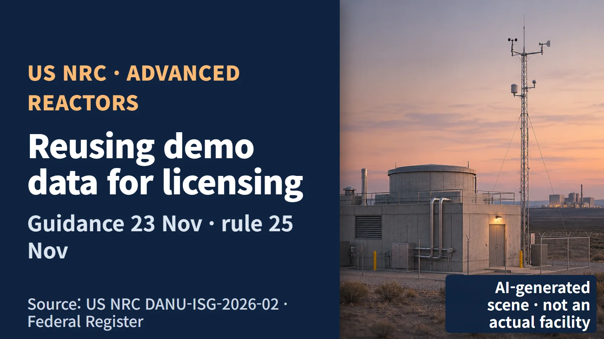
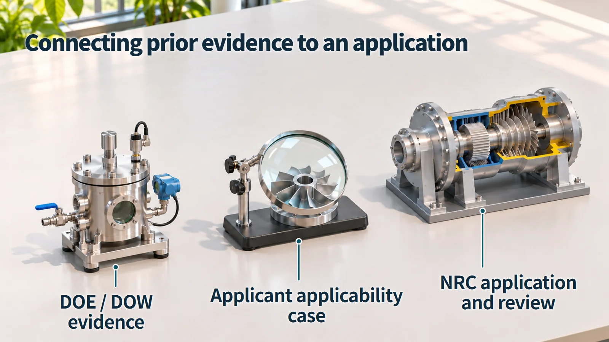
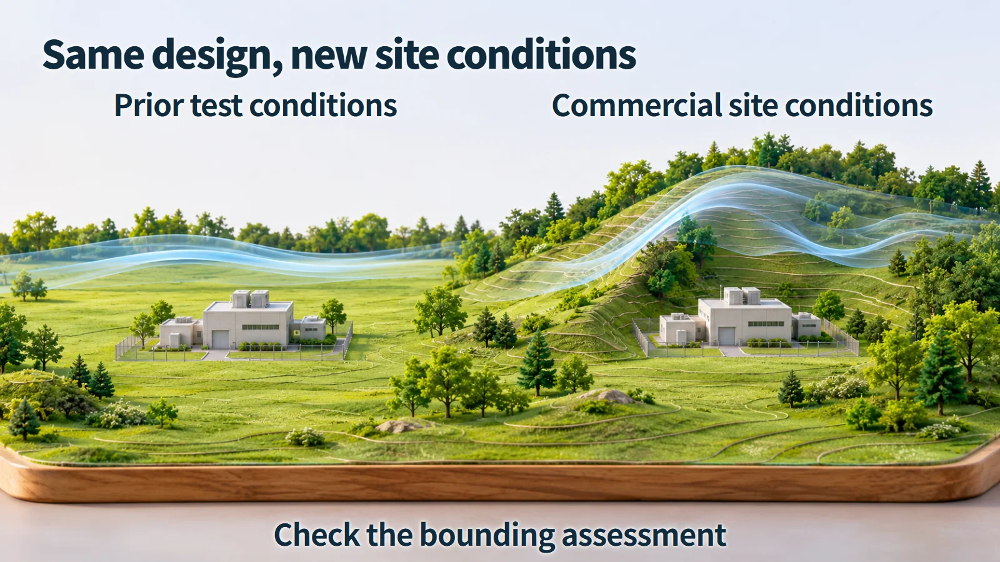

Reactor licensing
Conditions for Reusing Demonstration Reactor Safety Evidence in U.S. Commercial Licensing
How DANU-ISG-2026-02 lets DOE and DOW demonstration evidence feed NRC commercial applications.
A new interim staff guidance, DANU-ISG-2026-02, effective 23 November, sets the terms under which prior approvals from the U.S. Department of Energy (DOE) or the Department of War (DOW) can support a commercial reactor application before the U.S. Nuclear Regulatory Commission (NRC). A separate final rule that amends 10 CFR Part 50 and Part 53 takes effect two days later, on 25 November. Together they lay out, at the review-practice level, how demonstration-era test data can be used as supporting evidence in a Part 50 or Part 52 commercial filing, and where additional work by the applicant still begins.

From Demonstration Data to Commercial Applications
The rule and the guidance play distinct roles. 10 CFR 50.43(f) and 10 CFR 53.440(a)(1) write into the regulations a legal pathway for considering previously approved information in a commercial submission. The ISG final version, effective 23 November, turns that pathway into an operational manual for preparing and reviewing the application itself. The rule effective date (25 November) and the guidance effective date (23 November) differ, so applicants should read the two documents against each scope separately.
The guidance applies directly to applications under 10 CFR Part 50 (construction and operating licenses) and Part 52 (combined licenses and design certifications). The underlying premise is a design that has been "shown through testing to function safely." Where a demonstration reactor has actually operated a given safety function, and that function can be mapped to a design feature in the commercial facility, the prior record can be cited as supporting evidence. Functions that were not exercised in demonstration, or that must now operate under new commercial operating conditions, still require fresh demonstration.
The practical shift is this. The ISG sets out a framework in which an applicant can lay out, at submission, exactly which prior approvals support which regulatory requirements and to what extent, and what comparative evidence must accompany that claim.

Conditions That Govern Applicability
The ISG gives an example in which NRC staff may tailor the focus and depth of review when two conditions are met: the relevant design features and safety functions are materially similar to those previously authorized, and NRC determines that the prior assessment remains applicable and technically valid for the current application. The applicant can describe three pieces of comparative information: the scope of the earlier approval, the features and safety functions that were covered inside it, and the actual design, operating, and site differences for the current filing. A shared facility name or a shared approving agency on its own does not stand in for that comparative record; the applicant has to show at the level of design features where things are the same and where they diverge.
The guidance sets out three technical approaches according to reactor type. The first is the traditional deterministic light-water-reactor evaluation, in which postulated design-basis accidents are shown to yield consequences within regulatory limits. The second is a deterministic evaluation for non-light-water reactors, which adapts that framework to designs with different coolants and fuels. The third is a risk-informed and performance-based evaluation applicable to non-light-water reactor technologies (the approach reflected in NRC Regulatory Guide 1.233), which weighs accident frequency together with consequence so that review effort concentrates on safety-significant elements. An applicant selects the approach that fits its design and the character of its prior evidence, and then shows where each piece of prior approval sits inside that approach.
A working recommendation in the ISG is to narrow the unit of review from "the whole facility" to the individual safety function. If a given demonstration test supports a passive cooling function, that record is mapped to the passive cooling requirements in the commercial application, and other safety functions are supported by their own evidence. Breaking the review apart this way reveals which requirements the demonstration record genuinely covers and which conditions remain to be established at the commercial stage.
What changes in practice. The important shift is that review depth is now adjustable. Where substantial similarity and technical validity have been established, staff can tune focus and depth rather than redo every item from scratch. The size of the adjustment is set by the quality of the comparative evidence the applicant provides.
What a Different Site Requires
The same reactor design can produce different accident analysis results on a different site, because the way released material travels and dilutes in the atmosphere depends on local meteorology and topography. Appendix E of the ISG describes using atmospheric dispersion factors that match or bound the site characteristics to evaluate dose at the boundary during accident analysis.

Even if the fuel and the reactor design are identical to those at the demonstration site, carrying the demonstration-site dispersion result over to a commercial site requires one condition: the applicant must show that the demonstration site's meteorological and topographic assumptions bound those of the new site. Where bounding cannot be shown, the sensible path is to present dispersion results calculated for the commercial site itself. The physics behind this follows the ordinary intuition that "air dispersion depends on wind, terrain, and the surrounding density of population and structures, even when the source is the same."
In practical terms, at least for atmospheric dispersion, the applicable scope of the demonstration record narrows with site characteristics. Appendix E assigns a clear division of labor: lean on the demonstration record for design, fuel, and safety-function evidence, and build fresh site-specific dispersion inputs for the new location.
Linking Evidence Inside the Application
The ISG text states that "applicants may, as an option, provide an equivalency map." Such a map makes it clear from inside the application which materials support which requirements, to what depth, and where additional evidence is still needed at the commercial stage. For example, each prior approval conclusion can be tied to four items on a single row — the document identifier, the requirement being addressed, the operating and site conditions, and the open questions that remain. The four-column layout is an editorial illustration for readers; the NRC leaves the map's format to the applicant, and providing the map itself is the applicant's option.
Within the same application, it also matters to separate results directly confirmed by demonstration from inferences that extrapolate those results to new conditions. The former rests on measured test and operating data; the latter rests on how that data has been reinterpreted under revised assumptions. The two call for different kinds of supporting material from staff: direct records against measurement logs, and interpretive records against stated assumptions and verification bounds.
The ISG is also explicit about pre-application engagement. Interagency coordination and pre-application discussions help identify, early, the areas where prior evidence overlaps and the areas where more information is required. The final determination of review focus and depth, however, is made by the NRC after it has reviewed the scope and adequacy of the evidence the application itself presents. Pre-application contact refines the questions; the determination comes once the application is on the docket.
The practical upshot is that the internal structure of the application shifts. For a design that carries a prior approval record, the filing works best as a document built around an optional equivalency map that ties each requirement to the evidence supporting it. As the 23 November guidance and the 25 November rule settle into use, the first cases to work through this format will show how the pathway operates in real reviews.